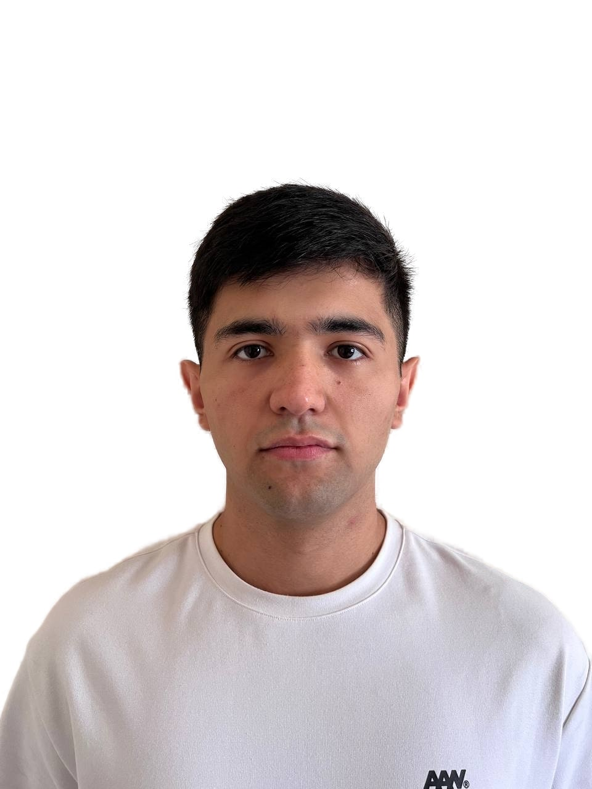

Temurbek Akhrorov

Summary
I am skilled in Adobe Premiere Pro, Photoshop, Python, and C , with strong creative problem-solving abilities. While I am new to
troubleshooting and have limited practical experience, I bring high passion and dedication to learning and contributing to the company's
success.
Through internships, I aim to grow quickly and enhance my practical skills, ensuring I become a valuable team member.
Additionally, I have managed a YouTube channel with over 30,000 subscribers, developing expertise in content creation, audience
engagement, and achieving measurable goals through consistent effort
Github
YouTube
LinkedIn
Education
- 2020.09 2024.08 - 인하대학교(4년제)
Language
- English (IELTS 7.5)
- Native Russian
- Native Uzbek
- Korean (Basic)
Experience
- Project 1: Object Detection System
Role: Lead Deveoler
Tasks: Developed a multi-model system for real-time car, animal,
and human detection with alert features using OpenCV and Python.
Project link
- Project 2:Face Detection Using Viola-Jones Algorithm
Role: Developer
Tasks: Collected and preprocessed datasets, trained a custom face detection model, and implemented real-time detection using OpenCV.
Project link
Awards and Certifications
- 2023.02 - Capstone Project Excellence Award Inha University
Other
Contact me